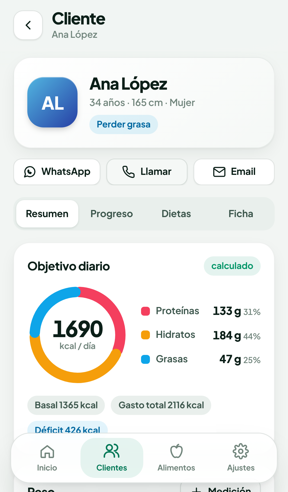
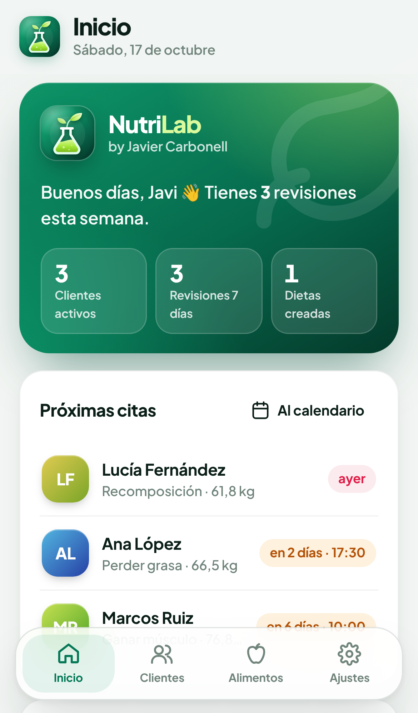
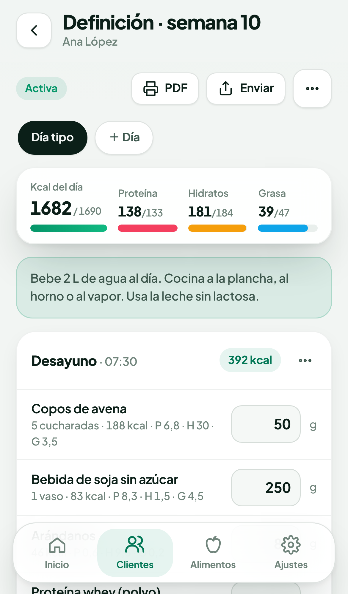
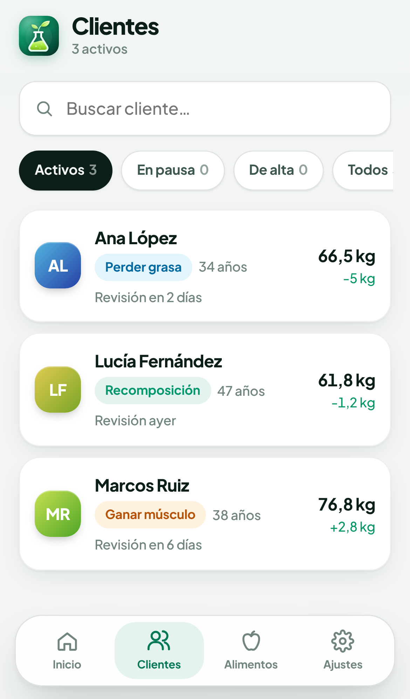
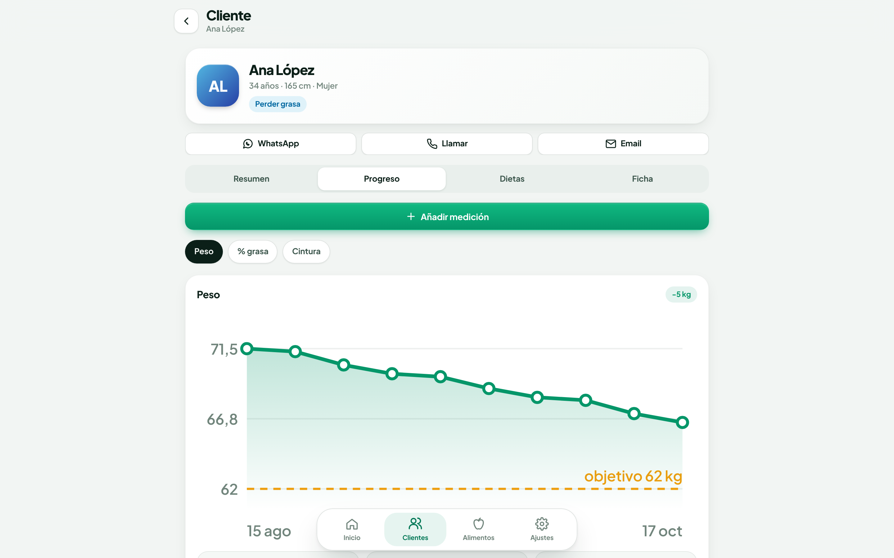
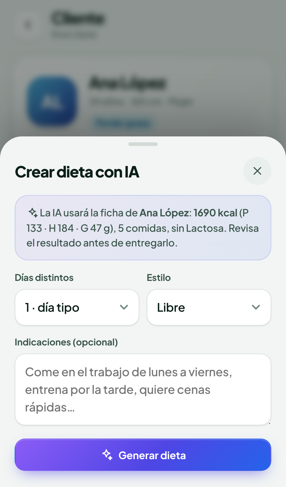
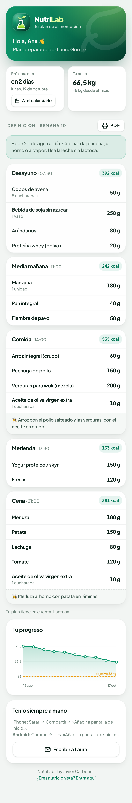
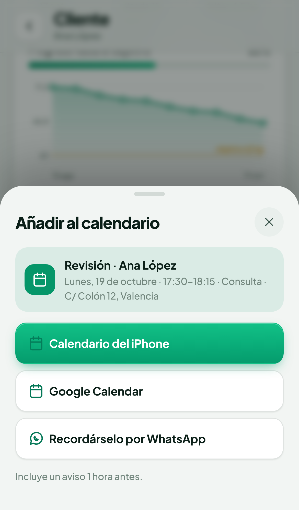

Clientes, dietas a mano o con inteligencia artificial, progreso, citas y un enlace privado para cada paciente. En el móvil, la tablet y el PC.
14 días gratisSin permanenciaiPhone · Android · PC



Por qué NutriLab
Menos papeleo. Más consulta.
NutriLab reúne en una sola app todo lo que hoy tienes repartido entre hojas de cálculo, documentos, WhatsApp y la agenda. Pensada para nutricionistas y dietistas que trabajan desde el móvil.
Sin NutriLab
Excel para calcular calorías y macros a mano
Dietas en Word que hay que maquetar cada vez
Pesos y medidas en libretas o notas sueltas
El paciente pierde el PDF y te lo vuelve a pedir
Citas en papel y recordatorios que se olvidan
Con NutriLab
Calorías y macros calculados al crear la ficha
Dietas completas en minutos, a mano o con IA
Gráficas de progreso y fotos en cada revisión
Cada paciente tiene su enlace con su dieta siempre al día
Citas al calendario del móvil y aviso por WhatsApp
Fichas de clientes
Datos, objetivo, alergias y preferencias. Calcula sus calorías y macros con la fórmula Mifflin-St Jeor.
Dietas con IA
Un plan completo con cantidades, medidas caseras y recetas, ajustado a la ficha y sin sus alérgenos.*
Dietas a mano
Base de unos 150 alimentos habituales en España y los tuyos propios. Macros al momento frente al objetivo.
Progreso visual
Peso, % de grasa, cintura y más perímetros, con gráficas hacia el objetivo y fotos de cada revisión.
Enlace del paciente
Tu cliente ve su dieta, su progreso y su próxima cita desde el móvil, sin instalar nada ni registrarse.
Citas al calendario
Programa cada revisión con hora y lugar y añádela al calendario del iPhone, Android, Google u Outlook.
* La generación con IA usa Claude, de Anthropic, con la clave de API de cada nutricionista; su coste se paga aparte según el uso. La IA propone y el profesional revisa antes de entregar.
NutriLab · by Javier Carbonell2
Clientes y progreso
Cada paciente, de un vistazo.

1
Todo en una fichaDatos personales, objetivo, actividad, alergias, gustos, contacto y notas privadas.
2
Objetivos automáticosCalorías y reparto de proteína, hidratos y grasa según el objetivo: perder grasa, mantener, ganar músculo o recomposición.
3
Mediciones con fotosRegistra peso y perímetros en cada revisión y compara la evolución con gráficas claras.
4
Contacto en un toqueWhatsApp, llamada o email directamente desde la ficha.

También en el ordenador: los mismos datos en el PC, el móvil y la tablet, sincronizados.
NutriLab · by Javier Carbonell3
Dietas
Una dieta completa en minutos.
Créala a mano con la base de alimentos o deja que la IA proponga un plan a partir de la ficha del cliente. Después ajustas lo que quieras.
1
IA que conoce a tu clienteUsa sus calorías, macros, número de comidas, alergias y lo que no le gusta. Puedes añadir indicaciones: «come en la oficina», «cenas rápidas»…
2
Macros en tiempo realCada cambio de cantidad actualiza las calorías del día frente al objetivo.
3
Varios días y recetasDía tipo o semana completa, con horarios, medidas caseras y preparación.
4
PDF y WhatsAppUn PDF limpio para imprimir o un texto listo para enviar al cliente.

Mifflin-St JeorGasto calculado con la fórmula de referencia y el nivel de actividad.
4 objetivosPerder grasa, mantener, ganar músculo o recomposición.
~150 alimentosHabituales en España, por 100 g, y los que tú añadas.
Revisión con IAPide cambios a la IA: «más proteína en la cena», «sin pescado»…
NutriLab · by Javier Carbonell4
Tu paciente, conectado
Su dieta en su móvil. Sus citas, en tu calendario.


1
Un enlace privado por clienteSe lo envías por WhatsApp. Sin descargas ni contraseñas: lo abre y ve su dieta activa, su progreso y su próxima cita.
2
Siempre actualizadoCuando cambias la dieta, el cliente ve la versión nueva. Puede guardarla como PDF o añadirla a su pantalla de inicio.
3
Tú tienes el controlSolo lectura. No ve tus notas privadas ni fotos. Sabes cuándo lo abrió por última vez y puedes anularlo cuando quieras.
4
Citas sin olvidosFecha, hora, duración y lugar. Al calendario del iPhone, Android, Google u Outlook con aviso previo, y recordatorio al cliente por WhatsApp.
Cuentas separadasCada nutricionista solo accede a sus propios clientes.
Enlaces segurosImposibles de adivinar y anulables en un toque.
Sin conexiónTrabaja sin cobertura; se sincroniza al volver la red.
Tus datos son tuyosExporta una copia completa cuando quieras.
NutriLab · by Javier Carbonell5
Precio
Un precio. Todo incluido.
Sin versiones recortadas ni límite de clientes. Pruébala 14 días gratis y decide después.
14 DÍAS GRATIS
49,99 € /mes
Sin permanencia. Cancela cuando quieras.
Clientes y dietas ilimitados
Dietas a mano y con IA*
Progreso con gráficas y fotos
Enlace privado para cada paciente
Citas al calendario y avisos por WhatsApp
PC, tablet y móvil sincronizados
PDF de cada dieta
Actualizaciones y soporte
1
Crea tu cuenta
Con tu email, desde el móvil o el PC. Sin tarjeta para la prueba.
2
Añade tus clientes
En un minuto tienes sus calorías y macros calculados.
3
Crea y envía la dieta
A mano o con IA, y se la mandas con su enlace por WhatsApp.
4
Suscríbete si te convence
Tarjeta, Apple Pay, Google Pay o PayPal, con pago seguro de Stripe.
Empieza hoy
javifx004-cmd.github.io/nutrilab
Escanea el código con la cámara del móvil o escribe la dirección en el navegador.
Javier CarbonellCreador de NutriLab
* La generación con IA necesita una clave de API de Claude (Anthropic) del propio nutricionista, con coste aparte según el uso. NutriLab es una herramienta de apoyo: las dietas deben ser revisadas por un profesional de la nutrición.